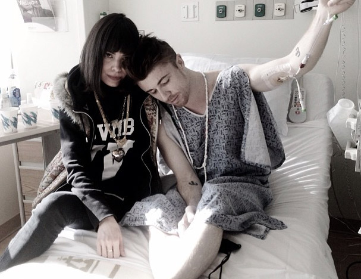

2 / 8 / 13 — Dear Friends,
It feels so surreal to be writing this to you. In fact I still can't wrap my head or my heart around it, but here it goes. A few nights ago Benjamin was admitted to the hospital for symptoms that have been getting worse for a few weeks now. After a dozen tests and scans (which he's endured like a champion) , the doctors say it's T-cell Lymphoblastic Lymphoma. It developed pretty aggressively, and the chemotherapy to treat it will be pretty aggressive, but the good news is that it's TREATABLE. These next few months will be tough, but he is the toughest person I know (even while here, he was trying to figure out a way to sample the MRI). I wanted to share this with you all, because you guys are such a huge and important part of our lives. Send all of the light and love that you can his way. Every bit will count towards a strong and fast recovery. I believe that with all of my heart. I will be doing the same. Love, Alley.